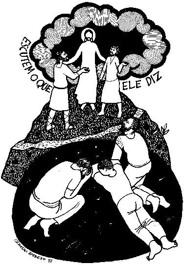

This week's lessons: 2 Kings 2:1-12, Psalm 50:1-6, 2 Corinthians 4:3-6, Mark 9:2-9
This
week's lessons: 2
Kings 2:1-12, Psalm
50:1-6, 2
Corinthians 4:3-6, Mark
9:2-9
Elementary School Pew-work
Listen hard to the Gospel. Afterward, circle the right word from the pairs of bold words in this story:
Jesus
took Peter, James, and John with him. They went up on a high mountain
/ tower, where they could be alone. There in front of the
disciples, Jesus / Peter was completely changed. 3And
his clothes became much whiter / redder than any bleach /
dye on earth could make them. 4Then Moses and Elijah
were there talking with Jesus / Peter.
5Peter
said to Jesus, "Teacher, it is good for us to be here! Let us
make three shelters, one for you, one for Moses, and one for Elijah."
6But Peter and the others were terribly frightened /
silly, and he did not know what he was talking about.
7The
shadow of a cloud / eagle passed over and covered them. From
the cloud a voice / angel said, "This is my Son, and I
love him. Listen to what he says!"!"
A
P A R T L E D A Y S J
|
(Mark 9:2) Six days later, Jesus took with him Peter and James and John, and led them up a high mountain apart, by themselves. And he was transfigured before them, (NRSV) |
Word List |
from http://www.efree.mb.ca/lectionarypuzzles free to distribute for free with this notice. Words are in a straight line left to right or top to bottom |
||
|
1.
Who went up on the mountain with
Jesus? 2. Who
appeared with Jesus on the
mountaintop? 3. What did
the disciples
offer to do? 4. What did
the voice
say from the sky? 5. When did we
hear the voice speak before? Questions taken from Sunday School Lessons; http://www.sundayschoollessons.com
|
 |
Next week's lessons: Genesis 9:8-17, Psalm 25:1-10 , 1 Peter 3:18-22 , Mark 1:9-15